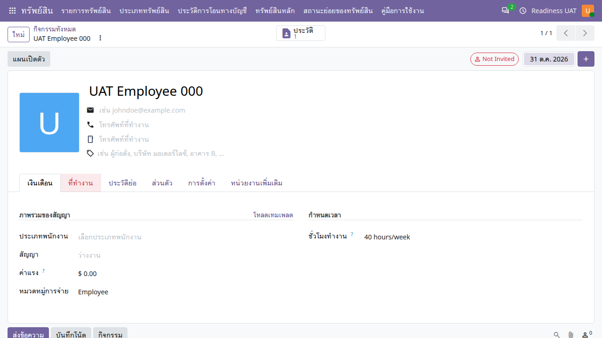

คู่มือการใช้งาน
พนักงาน
จัดการข้อมูลพนักงาน แผนก หน่วยงานหลัก และการสังกัดเพิ่มเติมตามช่วงเวลา
ไม่พบข้อความ ลองใช้คำอื่นหรือล้างคำค้นหา
เริ่มใช้งานและอ่านหน้าจอ
เปิดแอปจากเมนูหลัก แล้วเลือก คู่มือการใช้งาน คู่มือเปิดในแท็บใหม่เพื่อให้ดูพร้อมหน้าทำงานได้ เลือกแอปอื่นจากรายการด้านซ้าย หรือค้นหาคำในคู่มือนี้ และใช้ปุ่มพิมพ์ / บันทึก PDF เมื่อต้องการสำเนา
- ตรวจบริษัทที่มุมขวาบนและหน่วยงานในเอกสารก่อนสร้างหรืออนุมัติ เมนูและปุ่มขึ้นกับสิทธิ์ของบัญชี
- หลังแก้ข้อมูล ให้ใช้ปุ่มบันทึก / ไอคอนบันทึกตามที่แบบฟอร์มแสดง แล้วตรวจสถานะและเลขเอกสารก่อนออกจากหน้า
- ภาพประกอบเป็นข้อมูลจำลอง ชื่อรายการ ภาษา หรือเลขเอกสารอาจต่างจากบัญชีของคุณ ตัวเลขในภาพไม่ใช่ค่าที่ต้องกรอก
- ข้อความผิดเงื่อนไขให้จดเลขเอกสารและข้อความที่แสดง ส่งให้ผู้รับผิดชอบงานตรวจ อย่าส่งรหัสผ่านหรือข้อมูลเข้าสู่ระบบ
- ถ้าคู่มือเปิดแล้วภาพหรือภาษาเก่าค้าง ให้บันทึกงานในหน้าระบบก่อน แล้วรีเฟรชแท็บคู่มือ
ข้อมูลพนักงานและขอบเขตการมองเห็น
หน้าข้อมูลพนักงานและข้อมูลส่วนตัวมีสิทธิ์ต่างกัน บริษัท หน่วยงานหลัก แผนก และการสังกัดเพิ่มเติมมีผลต่อการมองเห็นตามนโยบายที่ติดตั้ง การเลือกบริษัทอย่างเดียวไม่ได้เปิดข้อมูลพนักงานทุกหน่วยงาน
สร้างหรือแก้ข้อมูลพนักงาน
พนักงาน → พนักงาน
- เจ้าหน้าที่ที่มีสิทธิ์สร้างรายการใหม่หรือเปิดพนักงานที่อยู่ในขอบเขต
- ระบุชื่อ บริษัท และข้อมูลการทำงาน เลือกหน่วยงานหลักและแผนกให้ตรงกัน
- ตรวจหัวหน้างาน ตำแหน่ง และข้อมูลติดต่อที่จำเป็นตามหน้าที่
- บันทึกและตรวจข้อมูลจากมุมมองผู้ใช้งานตามสิทธิ์ ไม่ใช้ข้อมูลส่วนตัวจริงในชุดทดสอบ

แผนกเชื่อมกับหน่วยงานอย่างไร
- เปิดแผนกที่ต้องการ ตรวจบริษัทและหน่วยงานที่เชื่อม
- หน่วยงานของแผนกต้องอยู่ในบริษัทเดียวกันและสอดคล้องกับหน่วยงานหลักพนักงาน
- เมื่อย้ายแผนก ให้ตรวจความสัมพันธ์หน่วยงานหลักพร้อมกัน หากระบบปฏิเสธให้ตรวจคู่ข้อมูลก่อน
- การปรับโครงสร้างที่เกี่ยวกับหลายพนักงานควรให้ผู้รับผิดชอบตรวจผลกระทบก่อนบันทึก
เพิ่มการสังกัดหน่วยงานเพิ่มเติม
พนักงาน → เปิดพนักงาน → หน่วยงานเพิ่มเติม
- เจ้าหน้าที่บุคคลเพิ่มรายการ เลือกหน่วยงานในบริษัทเดียวกับพนักงาน
- ระบุประเภทการมอบหมาย วันเริ่มต้น และวันสิ้นสุดตามคำสั่งจริง
- เปิดใช้งานและตรวจสถานะมีผล ณ วันที่ใช้งาน ไม่สรุปจากช่องเปิดใช้งานอย่างเดียว
- เมื่อสิ้นสุดการมอบหมาย ให้ปิดหรือกำหนดช่วงเวลาตามข้อเท็จจริง โดยคงรายการที่ใช้เป็นหลักฐาน
เมื่อต้องการดูข้อมูลข้ามหน่วยงาน
ให้ผู้ดูแลตรวจการมอบหมายหน่วยงานของบัญชีผู้ใช้ร่วมกับบทบาท HR และการสังกัดของพนักงาน การเพิ่มหน่วยงานเพิ่มเติมให้พนักงานไม่ใช่การมอบสิทธิ์ผู้ดูแลให้บัญชีของพนักงานคนนั้น
คำถามที่พบบ่อย
| อาการ | ตรวจอย่างไร |
|---|---|
| เห็นรายชื่อแต่เปิดข้อมูลส่วนตัวไม่ได้ | สิทธิ์ข้อมูลทั่วไปกับข้อมูลส่วนตัวต่างกัน ติดต่อผู้รับผิดชอบ HR |
| แผนกไม่ตรงหน่วยงาน | ตรวจหน่วยงานที่แผนกเชื่อมและบริษัทของทั้งสองรายการ |
| ไม่เห็นแท็บหน่วยงานเพิ่มเติม | แท็บนี้จำกัดตามสิทธิ์เจ้าหน้าที่ HR |
| พนักงานหายหลังย้ายหน่วยงาน | ตรวจหน่วยงานหลัก การสังกัดที่มีผล ช่วงเวลา และหน่วยงานที่บัญชีตนได้รับมอบหมาย |